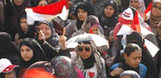

|
|

حمله مردان به تظاهرات زنان مصر عليه آزار جنسی
شنبه20 خرداد 1391
رادیو زمانه: صدها مرد به زنانی که تظاهراتی را در اعتراض به آزار جنسی زنان در قاهره برگزار کرده بودند، حمله کردند و با شکستن سد مردان محافظ اين زنان، چند تن از زنان تظاهرکننده را در ميدان تحرير مورد آزار جنسی قرار دادند.
به گزارش گاردين، برخی از قربانيان اين رويداد که روز گذشته، هشتم ژوئن (۱۹ خرداد) رخ داد میگويند اين حمله، اقدامی سازمانيافته بود که با هدف بازداشتن زنان از شرکت در راهپيمايیها و لطمه زدن به جنبش دموکراسیخواهی مردم مصر صورت گرفته است.
حمله روز جمعه، آزار جنسی برخی زنان تظاهرکننده را در ميدان تحرير در پی داشت. اين همان ميدان شهر قاهره است که محل وقوع قيامی در سال گذشته بود که حسنی مبارک را وادار به کنارهگيری از قدرت کرد.
در اوايل هفته جاری نيز يکی از خبرنگاران آسوشيتدپرس شاهد حمله حدود ۲۰۰ مرد به يک زن بود که پيش از آنکه کسی به کمک او بيايد، در اثر آزارهای آن مردان از حال رفت.

تظاهرکنندگان در راهپيمايی روز جمعه خواستار پايان دادن به هر نوع آزار جنسی شده بودند. حدود ۵۰ زن در اين تظاهرات شرکت کرده بودند و گروه پرشمارتری از مردان نيز برای حمايت از آنان، با گرفتن دستهای يکديگر حلقهای محافظتی را در اطراف آنها ايجاد کرده بودند.
معترضان در اين تظاهرات پوسترهايی در دست داشتند و شعارهايی سر داده بودند.
پس از آن که تظاهرکنندگان به گوشه پر ازدحامتر ميدان تحرير رسيدند، صدها مرد به آنها حملهور شدند، آنها را به باد تمسخر گرفتند و مورد آزار جنسی قرار دادند.
بنا به برخی گزارشها، مهاجمان، زنانی را که قصد فرار داشتند تعقيب و چند تن از آنان را گرفتار کردند و با پرخاشگری آنها را مورد آزار جنسی قرار دادند. برخی از زنان نيز در ساختمانی در نزديکی محل وقوع حادثه پناه گرفتند.
در قيام سال گذشته که منجر به سقوط حسنی مبارک شد، زنان به مدت کوتاهی "مصر جديدی" را تجربه کردند. زنان در آن قيام بهعنوان فعال، معترض، پزشک و مبارز در مقابل نيروهای امنيتی ظاهر شدند. آنها در ۱۵ ماه گذشته نيز همچنان نقش مهم خود را در جنبش مصر حفظ کردهاند. با اين حال، حمله به زنان معترض در طول اين چند ماه معمول بوده و اغلب از سوی مردانی که با فعاليت اجتماعی زنان مخالفاند و همچنين نيروهای امنيتی صورت گرفته است.
در جريان اعتراضهايی که منجر به برکناری حسنی مبارک شد نيز چندين بار به روزنامهنگاران زن خارجی حمله شده بود.